1. SE 423: Introduction to MechatronicsLecture 14: Sensors & Maze following & LocalizationsMarius Juston
Monday, March 16th, 2026
2. Review – 5-minute partner discussion
Talk to the person next to you and answer these questions.
- With the IMU onboard the lab robot, how would I measure its current position?
- With the current knowledge you have with the robot and the current set of sensors would we be able to send it out to go from point A-to-B in real world scenarios (more of an open-ended question)?
-
- If not, what do you think we are missing from the current robot?
- If yes, are there any assumptions that have been made?
3. Reminders
Office Hours:
- Monday: 4-6 PM, Neel
- Tuesday: 11-1 PM, Lakshmi
- Tuesday: 1-3 PM, Samuel, NO OFFICE HOURS THIS WEEK (MIGHT BE RESCHEDULED)
- Tuesday: 2-5 PM, Dan & Marius
Lab: Starting Lab 5 this week. This a 1-week lab!
Homeworks:
- Check-offs for homework 3 Ex 1, 2, 3 & 4 are due March 10, 5PM (The end of office hours)
- Check-offs for homework 3 Ex 5 are due March 24, 5PM (The end of office hours)
- Answers and code submissions for homework 3 are due March 25, 9AM
4. Questions?
Homework, Lab, LabVIEW?
5. Sensors
6. Sensors
We currently have explored a couple of way to sense information about the robot’s internal state (IMU, encoders).
What are we missing?
Sensing external objects!
What are some examples?
- Walls
- People
- Water
- Doors
- Etc.
7. Sensors
There are 2 types of sensors,
Passive sensors: Measure the environment without emitting their own signals
Examples:
- Standard camera
- Thermometer
Active sensors: Emit energy into the environment and measure the reflection / reaction to determine object properties
Examples:
- LiDAR
- Radar
- Sonar
8. Sensors
Is the accelerometer a passive or active sensor?
Passive
Is the gyroscope a passive or active sensor?
Active (the gyro has a drive motor; thus, you have provided energy)
Is the magnetometer a passive or active sensor?
Passive
9. Sensors
Which type of sensor do you think operates better in complete pitch-black darkness for finding walls?
Active
Which type of sensor do you think operates best in measuring location of forest fires?
Passive
Which type of sensor do you think operates best in measuring the current environment in the visible spectrum?
Passive (this is just a camera!)
10. IR
11. IR Sensor
We want to be able to detect if there is an obstacle in front of us. The best / simplest way to do this is though an active sensor.
IR sensors emit an invisible infrared light beam and measures the reflection that bounces back.
The intensity of the returning light indicates the distance of an object.
Composed of 2 parts:
- PSD (position sensitive detector)
- IR-LED (infrared emitting diode)
12. IR Sensor
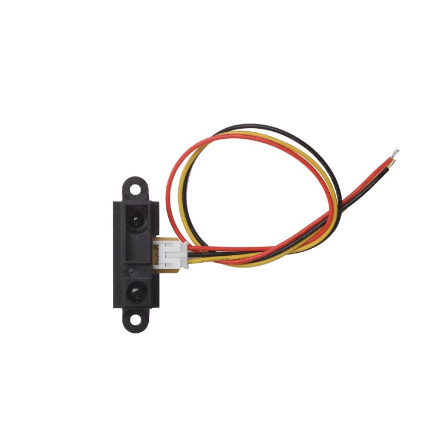
Light detector
LED
Basic operation principle:
- The IR LED emitter sends out and infrared light beam (invisible to the human eye)
- The light travels forward until it hits and object or obstacle
- The object reflects some of the IR light
- The receiver detects the reflectance light
- The sensor determines the approximate distance
Distance is measured from reflectance:
Closer object = stronger reflected signal
Further object = weaker reflected signal
https://www.smart-prototyping.com/Sharp-IR-Distance-Sensor-GP2Y0A41SK0F-4-30-cm
13. IR Sensor
Advantages:
- Simple and inexpensive
- Small size and lightweight
- Fast response time
- Low power consumption
Limitations:
- Performance affected by surface color and reflectivity
- Limited detection range (signal power disperses at a rate of d2)
- Sensitive to ambient IR light (sunlight)
- They provide a single point of data, acting like a flashlight beam rather than a wide field of view
Typical Range:
2 to 80 cm
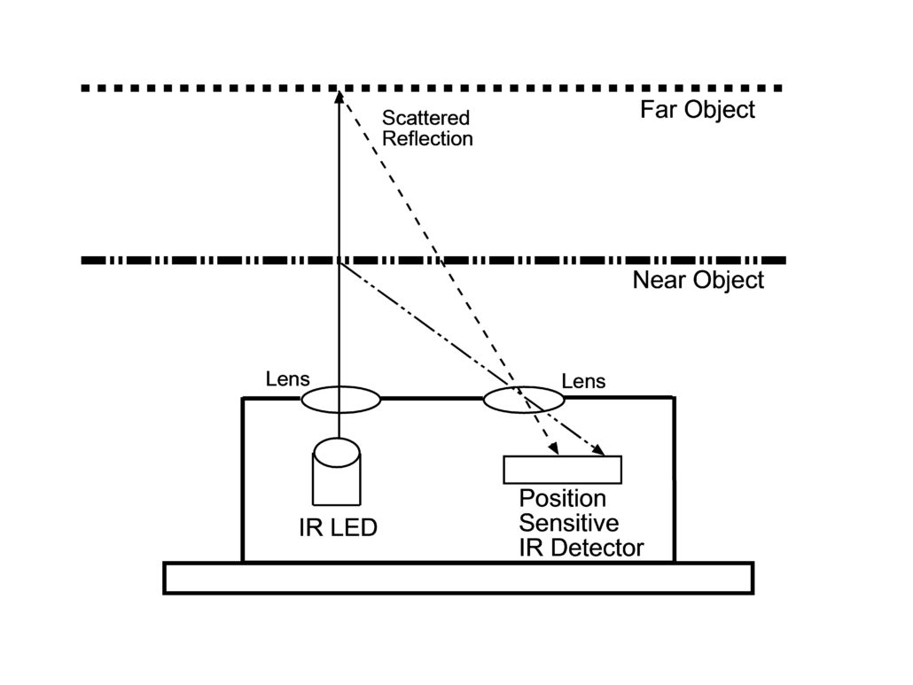
14. IR Sensor
Why do these light signals not do very well in long ranges? Why do we need more powerful LEDs to be able to see further?
Signal dissipation!
When an IR LED emits light, the energy spreads out in all directions!
As distance increases, the same energy covers a larger surface area!
Therefore, the signal intensity decreases with distance.
This relationship is called the Inverse Square Law
Where:
- = signal intensity
- = distance traveled from the source
15. IR Sensor
However, these IR type distance sensing is worse than !
Because the signal travels 2 paths:
- Emitter to Object
- Object to Receiver
So, the returned signal is roughly:
So, to see very far and be able to remove noise you need an extremely powerful LED!
Same goes for most active sensors such as Radar / Sonar / LiDAR!
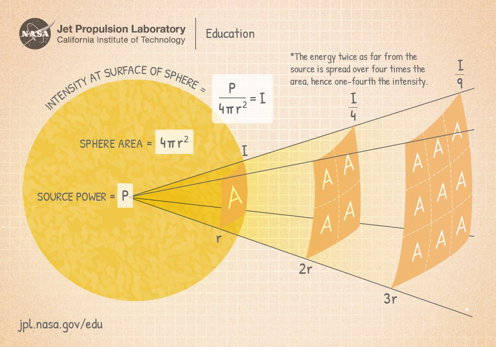
https://www.jpl.nasa.gov/edu/resources/lesson-plan/collecting-light-inverse-square-law-demo/
16. LiDAR
17. LiDAR
What if you want to see the distance of all the obstacles around you instantaneously? Would IR be enough? How would you use IR sensors to create a 360 view of the world?
A basic IR distance sensor only measures distance in one direction.
If we want a complete view of obstacles around a robot, we will need:
- Many IR sensors
- Each pointing in a different direction to cover the 360 degrees around the robot
Problems with this approach:
- Large number of sensors required
- Limited accuracy (bleed from the other sensors)
- Slow updates if scanned sequentially
- Difficult calibration
18. LiDAR
When a single-point IR isn’t enough, we turn to Light Detection and Ranging (LiDAR)!
LiDAR solves this by using a laser that scans the environment.
Key idea:
- Send a laser pulse
- Measure how long it takes to bounce back
- Convert that time into distance
Main components:
- Laser emitter
- Photodetector
- Precise timing electronics
- Rotating motor / scanning system
The system rapidly scans the environment and generates a point cloud, which represents the surrounding world.
19. LiDAR
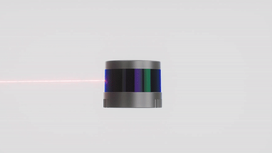
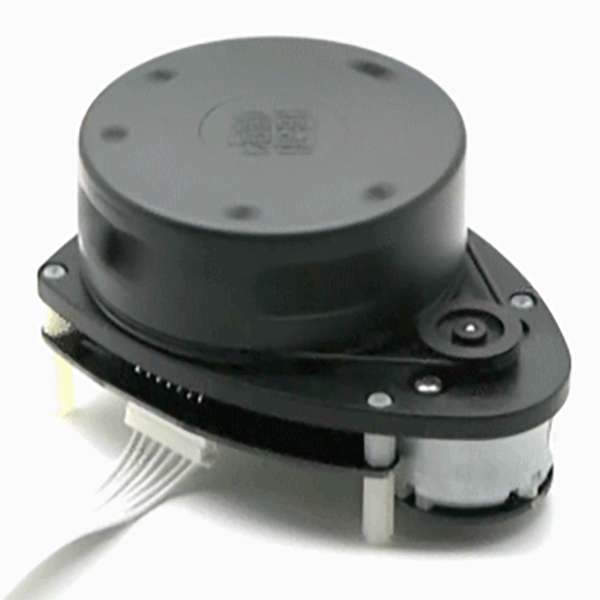
https://hackaday.com/2017/04/20/new-part-day-very-cheap-lidar/
https://www.hesaitech.com/things-you-need-to-know-about-lidar-the-more-lasers-the-better/
20. LiDAR
LiDAR determines distance using Time-of-Flight (ToF). Instead of signal intensity, since it can measure that precisely and thus is can get a more accurate distance measurement.
- A laser pulse is emitted.
- The pulse travels to an object.
- The object reflects the pulse back.
- The sensor measures the round-trip travel time.
Distance is calculated using:
Where:
- = distance to the object
- = speed of light ( m/s)
- = measured round-trip time
Why is there a division by 2 in the equation?
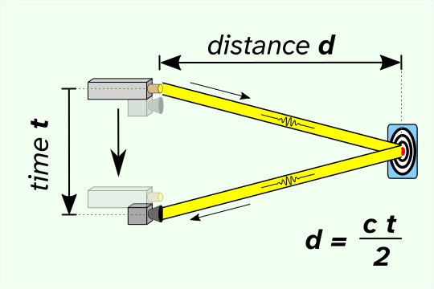
21. LiDAR
Only possible to use ToF flight sensors since clocks are now extremely fast and accurate.
Example:
If the pulse returns in 20 nanoseconds:
The Red Board’s clock runs at 200 MHz ( not that you would use the Red Board ). Which has a clock cycle of 5 nanoseconds.
22. LiDAR
What happens if the clock is too slow?
- You get a lower accuracy since the time is not as accurate
- You cannot measure distances that are too close! (there is usually a minimum distance for LiDARs as well as the field of view)
- In addition, if you are not far enough your receiver cannot see the signal
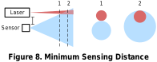
23. LiDAR
Why use lasers?
The problem is that Inverse Square Law it is based on the surface expanding in space. What are 2 ways to improve the intensity of the signal returned?
- Increase the power.
- Reduce how dispersed the signal is
IR LEDs spread light over a wide angle, which causes:
- Rapid signal loss
- Poor directional accuracy
- Lower range
24. LiDAR
Lasers are preferred because they have:
High Directionality:
- Laser beams are very narrow, so most energy travels in one direction.
- This allows detection of objects much farther away.
High Optical Power Density:
- Because the beam is concentrated, the returned signal is stronger.
Precise Timing:
- Laser pulses can be extremely short, enabling nanosecond-level timing accuracy.
Better Spatial Resolution:
- A narrow beam allows LiDAR to detect fine details and small objects.
25. LiDAR
Pulsed LiDAR, you send a small light pulse and get the time that it arrived. Allows for the precise timing.
The LiDAR sends pulses at set intervals and waits for the return.
The maximum distance that you measure is based on that pulse width. As otherwise it would bleed into other pulses.
Where:
- = the pulse width.
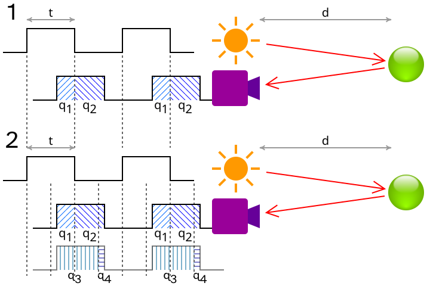
26. LiDAR
Given a long pulse width, it is possible to receive multiple returns.
Which can help with additional information in the environment allowing you to enter different materials.
https://iopscience.iop.org/article/10.1088/1361-6501/abc867
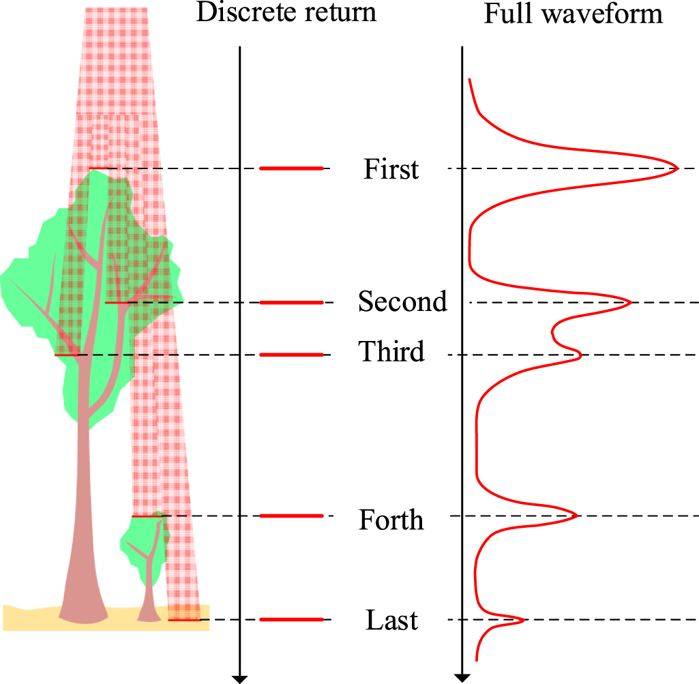
27. LiDAR
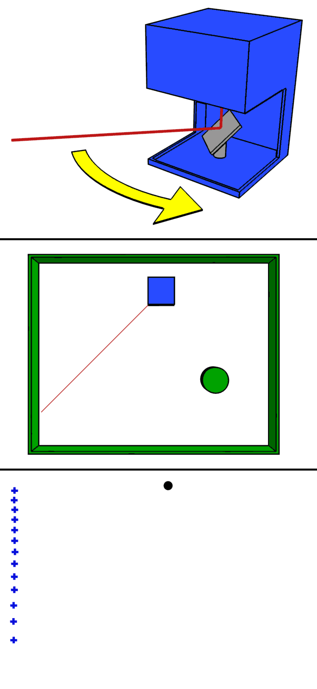
https://en.wikipedia.org/wiki/Lidar
By rapidly spinning the laser via a motor, we can generate a dense 2D or 3D map of the environment.
Given that we know the constant rate of turn, we thus know where each pulse will be located radially and the distance returned. We can thus generate a point cloud.
For 2D, the location of an obstacle relative to the LiDAR would be,
A point cloud is a map of 2D/3D points in space where objects are located.
28. Wall Following
29. Wall Following
We now have sensors to figure out where obstacles are and where the robot itself is located!
In lab we will be using the LiDAR and the IMU to perform some wall following.
However, raw data from a sensor does not magically steer a robot; we must map these distance readings to the wheel motor controls.
The Hokuyo URG-04LX LADAR updates every 100 ms (10Hz), whereas the motor controllers require new voltage commands every 1 ms to remain stable. (We will go through this sensor and the code specifically after Spring Break)
To resolve this extreme timing discrepancy, we split the robot's logic into a Cascade Control architecture comprising an Inner Loop and an Outer Loop.
30. Wall Following
For this robot it might not be extremely critical; however, think about fighter jets, they have lots of different sensors all working at different speeds and requiring different priorities. Any delay could be catastrophic!
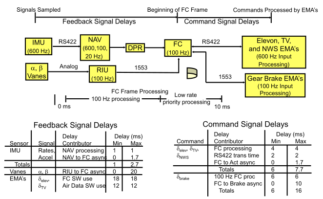
ME 547 Robust and Adaptive Controller – Week 1 Review 2025 slides
31. Wall Following
To manage these dual control loops on the F28379D processor, we rely on a strict hierarchy of Hardware Interrupts (HWIs) and Software Interrupts (SWIs).
The Inner Loop executes inside an HWI, completely pausing the main code every 1ms to ensure the motors receive perfect, uninterrupted timing.
The Outer Loop (processing LADAR math) executes inside a SWI. SWIs are powerful because they allow complex math to run in the background but can be safely interrupted by the 1 ms HWI to prevent motor stalling.
If the LADAR trigonometry takes 3.5 ms to compute in an SWI, exactly how many times will the Inner Loop HWI pause it?
32. Wall Following – Inner Loop
The Inner Loop acts as the low-level controller, setting and calculating the wheel velocities using the PI controller used in lab.
We also use it to calculate the robot’s spatial coordinates by integrating the IMU and the left-right speed.
We also use the MPU-9250 Z-axis rate gyro to compute the robot’s heading, .
33. Wall Following – Outer Loop
The Outer Loop does the heavy lifting.
Every 100 ms, the LIDAR transmits 228 distance points to the F28379D via the UART serial port.
Processing 228 trigonometric projections (calculating sines and cosines) is computationally heavy, so we extract strategic named sub-vectors to govern navigation.
These represent key regions of interest such as “front”, “left front”, “right front”.
Why do we extract the minimum of a 5-point cluster rather than simply trusting a single laser ray or taking the mean?
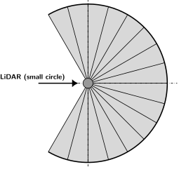
Front
Left Front
Right Front
Speaker notes
It is more dangerous to actual hit something. So it is better to be safer, so that is why we use the minimum!
34. State Machine
35. Wall Following – State Machine
Autonomous navigation requires rigid decision-making architectures; the most robust paradigm for maze-solving is the Finite State Machine (FSM).
An FSM divides continuous mechatronic behavior into discrete operational modes, or "States," governed by strict conditional transitions.
For each “State” specific actions happen inside, such as going forward or turning left, do nothing, each can be completely unique. To be able to switch states we then must be able to put specific conditions to say which state we should go to.
For continuous right-wall following, we can construct a simple 2-State FSM interface:
- State 1 (Wall Follow)
- State 2 (Left Turn).
36. Wall Following – State Machine
Allows for separation of tasks and enables complex independent behaviors.
This also helps with software as having states means that you can modularize (have separate files / functions) for each of your different states instead of one big function. This makes things easier to debug and extend to include additional states.
For the right-wall following we would have 2 states:
- State 1, ensures that the robot maintains a specific distance from the wall based on the LiDAR values
-
- If we see an obstacle in front of us, another wall, we want to change state 2
- State 2, handles the case when there is an obstacle in front of us, to avoid collision we want to stop and turn left
-
- If we no longer see any obstacles, then we can continue following the wall from the right side (state 1)
37. Wall Following – State Machine
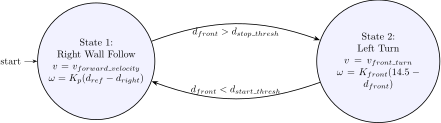
38. Wall Following – State Machine
A critical flaw in naive FSM design is "chattering" (Zeno behavior), where minor sensor noise causes the logic to rapidly oscillate between States 1 and State 2 infinitely fast.
To prevent this, we ensure a robust enough “deadband / hysteresis” zone into the transition boundaries.
A deadband zone typically represents an inactive region where no action is taken.
For example, instead of setting a velocity of close to zero, just set it to zero to reduce power consumption and potential small noise or backlash. When , set .
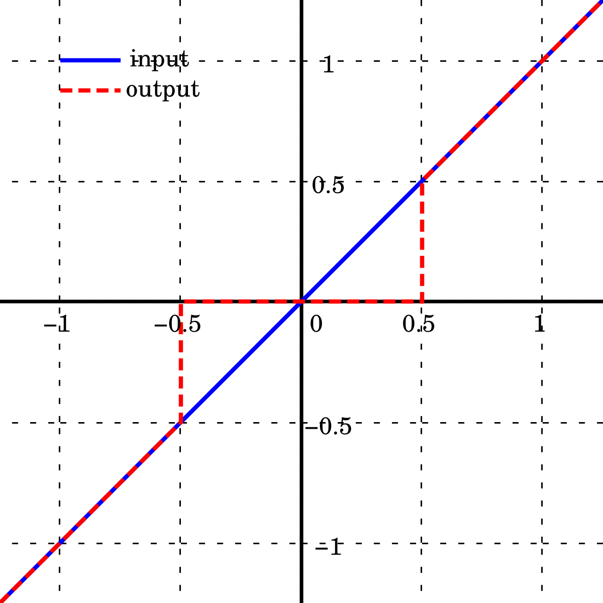
Speaker notes
Zeno behavior means “the system makes an infinite number of jumps, in finite time”
39. Wall Following – State Machine
Hysteresis is path-dependent, where the output relies on whether the variable is rising or falling.
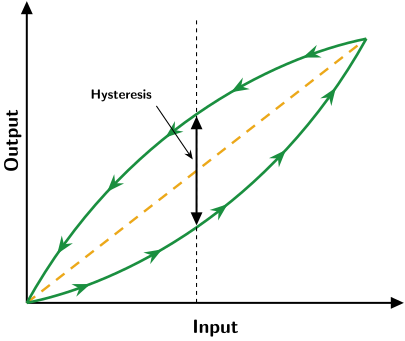
40. Wall Following – State Machine
In this case we do not authorize the return to State 2 until where the stop threshold is strictly greater than the start threshold, .
If the start threshold is 1.0 meter and the stop threshold is 1.5 meters. What state is the robot in at 1.2 meters?
It just stays at its current state! It has not reached on of the transition threshold yet!
41. Mechatronics Example
42. Mechatronics Example
Fantastic video of mechatronics, the tight integration of hardware, software and understanding the environment you operate it and building the robot for it!
The forefront of micro-optimizations to just improve performance as much as possible!
Uses everything that we do as well!
- IR Sensor
- Gyroscope
- Encoders
- DC motors
- Micro-controllers!
The some of the code can be found here.
https://hackaday.com/2008/11/26/vacuum-micromouse/
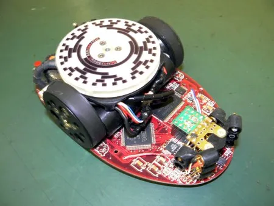
43. Mechatronics Example
YouTube video: The Fastest Maze-Solving Competition On Earth (Veritasium)
44. Wall Following – State Machine
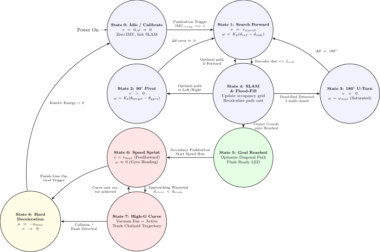